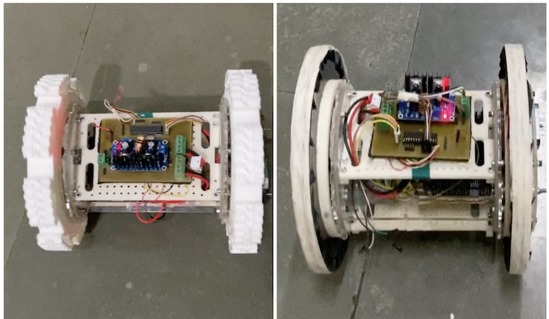

Hello! I'm Soofiyan Atar
Researcher in the field of Robotics
I am a final year student from K.J. Somaiya College of Engineering pursuing Electronics and telecommunication Engineering. I’m a research-oriented, team player, and looking forward to collaborating with an enthusiastic team or startup researching in the domain related to Robotics. I've participated in many robotics which includes Robocon Competition, Eyantra Robotics Competition, Eyantra Ideas Competition, and Texas Competition which are major national competitions, other than these I have also participated in various University level competitions and have also won almost every competition. My major projects are based on Swarm Robotics, Path planning, SLAM, Deep learning, Motion Planning, Control Systems, and Perception. I am currently working and researching algorithms related to swarm robotics. My goal is to continue researching in the field of robotics and learn more along the way. I have also been leading the Robocon Software team for a year and also developed algorithms for the particular theme for this competition.
Experiences
These are all my Experiences and Competitions which I have participated in, and I have contributed in all these organiazations.
Robocon Competition
This competition is an International Robotics Competition. I took part in this competition for 2 years. For the first iteration I was Firmware programmer. For the second iteration I was Senior Software programmer in which we implemented 4 legged Robot and also implemented different algorithms suitable for the particular theme. We stood 5th rank in this competition and also won Springer award.
Eyantra Robotics Competition(eYRC)
This Competition is a Robotics National Competition with 12000+ participants and we stood 3rd Rank for the Nutty squirrel theme. In this theme we had to apply Path planning algorithm with Line following algorithm and many other algorithms. We had to also design lift mechanism and arm for placing the nuts.
Eyantra Ideas Competition(eYIC)
This Competition is a National Competition where all the teams have to submit their ideas. We finished in top 21 teams in the final and our project was Autonomous Amphibious Surveillance UGV. In this competition we first got selected through Regional finals and then National finals with total 140+ teams competting at Regional finals.

Virtual Lab Training by IIT Bombay
This was a training were we created a virtual lab in the field of computer security and also our lab was published on the Virtual labs official website. In this website we created a virtual lab using HTML, Javascript and CSS.
Texas Competition(IICDC)
This was a training were we created a virtual lab in the field of computer security and also our lab was published on the Virtual labs official website. In this website we created a virtual lab using HTML, Javascript and CSS.
Internships
These are all my Internships which helped to boost my skills and also taught me concepts related to Robotics.
Research Internship at IIT Bombay
In this Internship, I implemented wireless programming for the ATmega2560 micro-controller using the ESP32 controller. We also implemented it for Arduino ide by adding custom boards for eYFi-Mega board and custom packages for the same. I also implemented wireless programming on Arduino ide without installing any other packages. Added custom board on GitHub thus can be used for any operating systems.
Deep learning Internship at ATOS
In this Internship, I implemented the deep learning algorithm to detect defects on wind turbines using drones. We used the Faster RCNN algorithm and also did data analysis on the data collected by us from various sources.
Embedded Systems Internship at Eyantra
This was an inhouse internship held by K.J. Somaiya College of engineering conducted by Eyantra. In this Internship, I implemented I2C communication protocols to interface the 6 axis gyroscope + Accelerometer sensor with AVR controller and also applied different filters(Complimentary filter, Kalman filter). Also implemented it on the stm32f4 microcontroller which is Cortex M4 based microcontroller.

IoT internship at Faclon Labs
In this Internship I implemented 3 major projects which were e-Riksha charging IoT based station which works on CAN for retrieveing battery data and then sending data to the server using MC60 microcontroller and using MQTT Protocol, other was to actuate a system using sms and also merging the data with the server at the same time, last one was to control the system using temperature sensor and sending the data to server.
Projects
These are all my projects which is done by me or I was a contiributor in these project:
4 legged Autonomous quadrupled robot
Developed autonomous quadrupled robot which navigates using 2D Lidar, IMU and pneumatic actuator. For control we used LQR controller for each leg as to compute synchronized gait. We used STM32f4 micro controller for computation of all the algorithms. This was localized on a pre configured area which had known fences according to which we mapped the area in real time. As it was pneumatic based quadrupled robot it consumes very less energy.
Two wheeled self balancing robot on V-REP using LQR controller
This is a self balancing robot which is balanced using LQR controller. Used python external APIs for controlling the robot. Also balanced using Lua programming language which is the embedded language of V-REP.
Autonomous Amphibious Self balancing UGV
This is a self balancing robot which is balanced using LQR controller. Used python external APIs for controlling the robot. Also balanced using Lua programming language which is the embedded language of V-REP.
Honors and Awards
- 5th rank in ABU Robocon Competition(2018-19) held by IIT Delhi which is an International Competition but were not qualified for international round as we finsihed 5th place, also won springer award for finishing in top 8 teams.
- Winner in Eyantra Robotics Competition(eYRC 2018-19) held by IIT Bombay, where 12000+ students participated
- Finalist in Eyantra Ideas Compeition(eYIC 2019-2020) held by IIT Bombay which is a National level competition and finished in Top 21 teams for our Autonomous Amphibious Surveillance Robot
- Qualified for Semi finals in IICDC(India Innovation Challenge) by Texas Intruments which is a National level comeptition
- Finalists of Ennovate challenge which is Techno business competition where we had to present our business model for our particular project, held by Bloombox at K.J. Somaiya College of Enginnering
- Winner in Find-a-way-fade-away competition which was hel in K.J. Somaiya College of Engineering